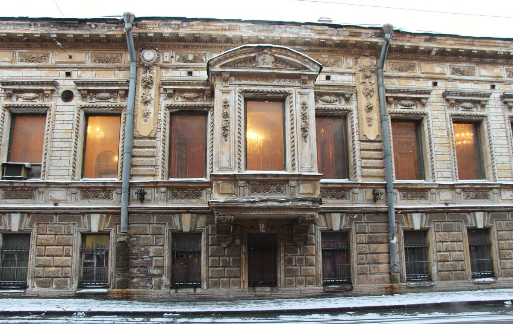
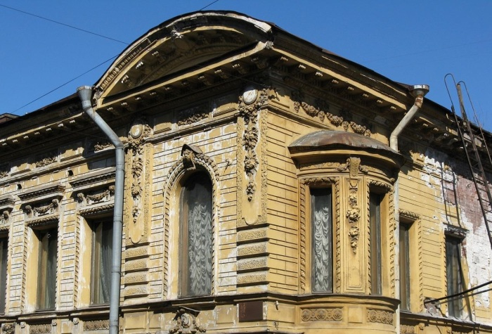
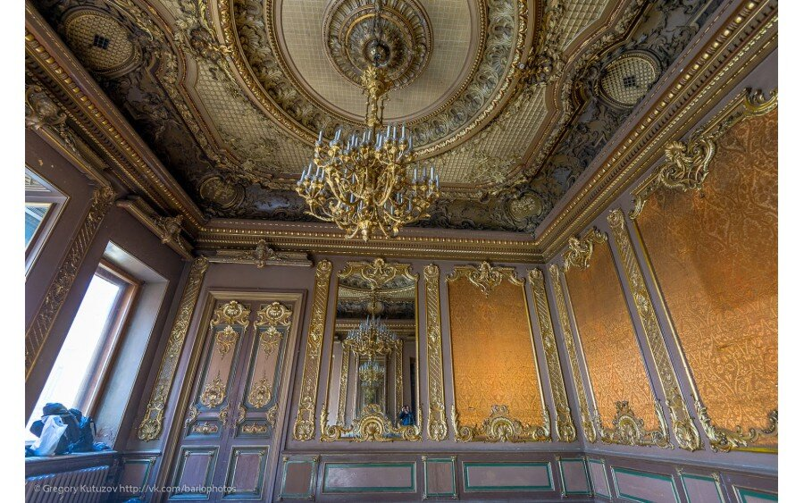
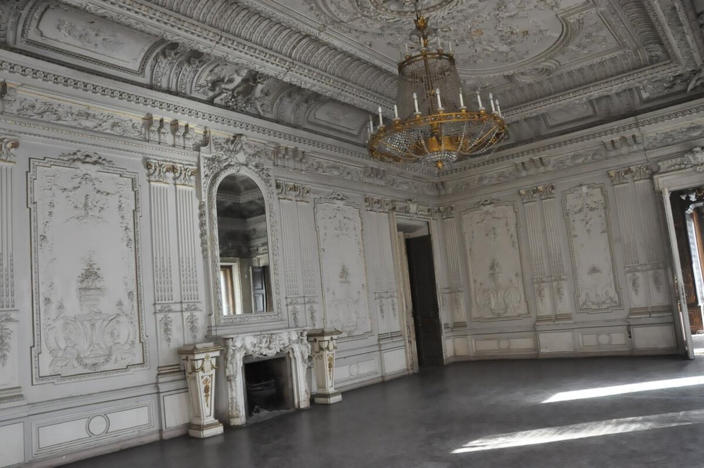

Зеркало Дракулы в особняке Брусницыных

Легенда
В одном из итальянских дворцов XVI века висело зеркало, которое, по легенде, было связано с прахом графа Дракулы (Влада Цепеша). В XIX веке это зеркало попало в руки Николая Брусницына, основателя кожевенной фабрики. Он приобрёл его и распорядился повесить в гостиной особняка (по другой версии — в Белом танцевальном зале). С тех пор в доме начали происходить странные события. Люди, смотрящиеся в зеркало, стали испытывать резкое ухудшение самочувствия, впадали в депрессию или становились жертвами несчастных случаев.

Одна из служанок, посмотревшись в зеркало, сошла с ума и была отправлена в психиатрическую лечебницу. Но это было ещё не всё. Вскоре после этих событий внезапно умерла внучка Николая Брусницына. Это событие стало последней каплей. В доме начали шептаться о проклятии, связанном с зеркалом. Из-за череды несчастий зеркало сняли со стены и убрали в кладовую.

Что было на самом деле
В середине XIX века крестьянин Николай Матвеевич Брусницын переехал в Москву и основал кожевенную мастерскую, которая со временем превратилась в успешный завод. Он оставил сыновьям завод на шестьсот рабочих мест и миллионы, заработанные на кожевенном деле. Братья Брусницыны были щедрыми благотворителями, содержали богадельню и общежитие для рабочих и их семей.

На Васильевском острове они владели участками на Кожевенной и Косой линиях, где располагалось здание XVIII века, купленное и переделанное по проекту архитектора Анатолия Ковшарова в стиле эклектики. Здание начало приобретать свои очертания. Оно стало напоминать лежащую плашмя букву «Ш». У каждого брата, для которых строился особняк, было своё крыло.
Оригинальные двери входа со стороны Кожевенной линии сохранились до сих пор. После революции здание было национализировано, главный вход заколочен, а вензель семьи Брусницыных заменен на серп и молот.
← Назад к карте